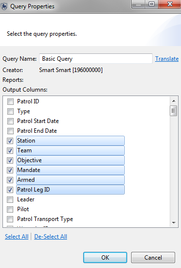
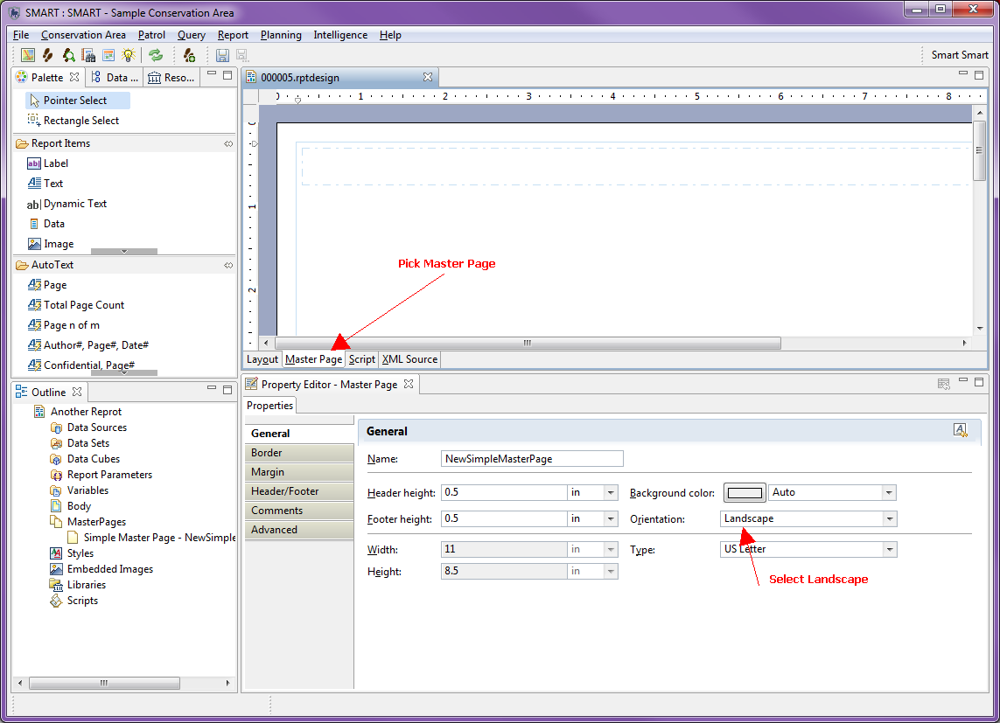
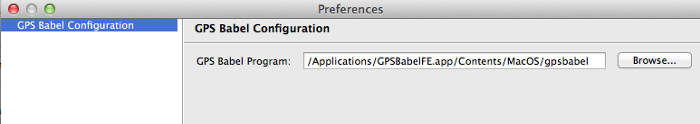

Shift Selecionar Barra de espaço
Em muitas partes do aplicativo SMART, quando muitos objetos (atributos, pontos de localização, etc...) são ativados ou desativados, o usuário pode alterná-los individualmente, por meio de Selecionar tudo/Desfazer Seleção de Tudo ou por outra opção.
Usando o botão Shift e selecionando um bloco de entradas e pressionando a Barra de Espaço, as entradas selecionadas serão ativadas ou desativadas.

Ordenação de Datas e Horários em Gráficos de Relatórios
A imagem a seguir mostra um exemplo de gráfico gerado a partir de uma consulta de resumo que inclui uma cláusula grupo por mês. O gráfico resultante não é ordenado por data.

Mudanças nas configurações padrão são necessárias para classificar o gráfico e exibir as datas e horas em ordem cronológica. À direita da entrada da Série de Categoria (X), clique no botão de classificação (veja abaixo).

A partir daí, o Grupo e a janela de classificação exibem um menu suspenso "Classificação de Dados". Isso permitirá que os usuários selecionem seu método de classificação preferido.

Modelo de dados e pesquisa de filtros
Quando colocado corretamente, o uso do asterix de pesquisa de caractere curinga (*) colocado no início ou no final da seqüência de pesquisa pode ajudar a isolar os itens de interesse.
Após a criação inicial do modelo de dados da Área de Conservação, o administrador precisará decidir sobre quais espécies incluir na Área de Conservação. A importação de todas as espécies disponíveis na lista de espécies padrão resultará em uma enorme árvore de espécies que afetará negativamente o desempenho da ferramenta. É altamente recomendável importar apenas as espécies necessárias para a Área de Conservação. Se mais espécies forem necessárias em uma data posterior, elas poderão ser adicionadas e usadas nas observações de patrulha.
P. Ao adicionar um quadriculado à visualização do mapa, ela geralmente não desenha, resultando em um X vermelho na camada quadriculada na lista Camadas. Como faço para exibir o quadriculado?
R. O quadriculado suporta apenas o CRS com medidor em todos os eixos.
Para especificar a projeção da quadriculado:
1. Abra a camada de estilo de quadriculados (clique com o botão direito do mouse na camada e escolha 'Alterar estilos' ou selecione a camada e use o botão de edição de estilo).
2. Escolha a página "Projeção" na lista à esquerda.
3. Selecione uma projeção com "medidor" em todos os eixos.
4. Aplicar.
P. Por que a função do tema do editor de estilo não está funcionando nos relatórios?
R. Este é um problema totalmente relacionado com o funcionamento do modelador de temas. Ele cria temas com base nos dados da camada. No entanto, o erro aparece porque, ao configurar o relatório, ainda não há dados na camada. Os dados da consulta não são gerados até que o relatório seja executado e as datas sejam fornecidas.
Para fazer isso, se você quiser estilos temáticos em seu relatório, você deve:
1. Executar a consulta na perspectiva da consulta e configurar o estilo de tema usando o editor de estilo associado à camada de consulta.
2. Quando o estilo de tema estiver configurado como desejo, abrir a caixa de diálogo de estilo da camada e selecionar a página "XML" na lista à esquerda.
3. Copiar todo o trecho XML mostrado.
4. Voltar a editar o seu relatório.
5. Alterar o estilo da camada do mapa no relatório ao qual você deseja aplicar a temática e colar o XML copiado na página "XML" deste diálogo de estilo.
6. Salvar.
7. Volte a executar o seu relatório e os dados corresponderão ao seu estilo temático.
P. Por que a SMART leva tanto tempo para carregar as áreas de conservação? Não parece que está fazendo nada.
R. Quando o aplicativo SMART é encerrado de forma anormal (desligamento do computador, falha do computador, etc.), o banco de dados SMART realiza uma validação na próxima vez que for executado. Essa validação pode demorar um pouco e é executada quando o sistema é inicializado. Para que isso não aconteça, certifique-se de encerrar o aplicativo corretamente ao terminar de usá-lo.
P. Por que minha consulta falha ao carregar com um erro "Não foi possível analisar: <Query Name>?
R. Isso é um resultado dos filtros de área ou do modelo de dados que mudam sem que a consulta seja atualizada. Você terá que recriar sua consulta.
Existem duas situações conhecidas em que isso ocorrerá:
1. se as chaves no modelo de dados forem alteradas ou removidas. Nesse caso, as consultas não são validadas (observações de patrulha são), portanto, esse erro ocorrerá.
2. se a chave de um filtro de área mudar. Novamente, as consultas não são validadas quando as áreas são modificadas ou atualizadas.
P. Por que a importação de GPS aponta para uma patrulha com várias pernas às vezes as coloca na perna errada?
R. Se duas pernas compartilharem o mesmo intervalo de tempo, a SMART não sabe para qual perna atribuir os pontos e escolherá uma delas. A verificação da designação correta dos pontos de localização é altamente recomendada ao importar para uma patrulha de múltiplas pernas. Se a atribuição dos pontos de localização, o usuário pode movê-los para uma perna diferente.
R. Se você vir opções extras na caixa de diálogo Exportar Mapa ou outras opções no menu de atalho da camada, talvez esteja tendo problemas com as definições de configuração da SMART. Tente executar "SMART.exe -clean" para corrigir e remover as funções não utilizadas.
P. Se eu tiver muitas colunas na minha consulta (e eu quiser ter essas colunas), posso projetar meu relatório no formato paisagem?
R. Sim. Veja a imagem abaixo.

P. A versão atual mostra 15 dígitos após o decimal para a distância percorrida e o número de horas... Eu preferiria ter apenas dois dígitos após o decimal. É possível fazer isso no sistema SMART ou precisa de alterações na programação?
R. Você não pode fazer isso na tabela Resumo. No entanto, se você usar seu resumo em um relatório, a interface de relatórios permitirá definir como formatar o número para exibição.
P. É possível copiar a página mestra e usar o mesmo formato para um novo relatório?
R. Use a função "Exportar para Biblioteca" associada à Página Mestra:
Depois, no seu segundo relatório:
Isso adicionará a página mestra ao seu segundo relatório. (veja a imagem anexa). Como regra geral, os itens que você deseja compartilhar nos relatórios devem entrar na biblioteca.
P. O que é o ID do elemento na seção de relatórios?
R. É um identificador usado pelo BIRT no design do relatório. Você não deveria precisar modificá-lo.
P. Você pode explicar o que são cubos de dados?
R. A SMART usa o BIRT para projetar e executar relatórios; Cubos de Dados são um recurso do BIRT - veja a documentação do BIRT na seção 2014-03-28 .
P. Na versão atual, podemos selecionar um único tipo de alvo (Numérico/Espacial/Administrativo) para cada equipe de patrulha/base/área de conservação. Como configuro os alvos numéricos e espaciais para um único plano de patrulha?
R. Um plano pode ter múltiplos alvos. Portanto, para criar alvos numéricos e espaciais, você precisa criar dois alvos em duas operações separadas. Primeiro, crie seu destino numérico e clique em "Salvar". Em seguida, use o botão "Adicionar destino" para adicionar outro destino, desta vez escolhendo um alvo espacial.
P. O que significa "CET" no campo da fonte de inteligência?
A. C é de Community, comunidade; E de extension, extensão; e T de team, equipe, que é uma equipe separada do Departamento Florestal/ONG trabalhando com as comunidades locais que podem ser uma fonte vital de inteligência.
P. Como eu instalo o GPS Babel no MAC?
R. O GPS Babel não vem com a SMART no pacote de instalação do MAC. Para habilitar o GPS Babel no MAC e permitir que os usuários importem dados diretamente de aplicativos GPS, você precisa seguir as instruções abaixo.
1. Baixe e instale o GPS Babel diretamente do site do GPS Babel. (http://www.gpsbabel.org/download.html)
2. Determine o caminho completo para o arquivo executável do GPS Babel. Este NÃO é o aplicativo GPS Babel que você vê na seção Aplicativos do Finder. Você deve percorrer este pacote e encontrar o arquivo executável gpsbabel.
Geralmente este arquivo está localizado em: /Applications/GPSBabelFE.app/Contents/MacOS/gpsbabel.
a) No Finder, clique em “Aplicativos”.
b) Encontre o aplicativo GPS Babel.
c) Ctrl-> Clique e escolha “Show Package Contents”
d) Navegue pelas pastas e encontre o arquivo do aplicativo gpsbabel. Você deve encontrar isto em Contents/MacOS/.
e) Crtl-> Clique em gpsbabel e escolha “Get Info”.
f) Na seção “Geral”, você verá um link “Onde:”. Esta é a pasta que você precisará anexar com o gpsbabel e usar na Etapa 6 abaixo.

3. Execute a SMART e crie ou importe uma Área de Conservação (ou restaure um backup) e efetue login no sistema.
4. Abra o item de menu "Arquivo" -> "Preferências do Sistema".
5. Escolha a página "Configuração do GPS Babel".
6. Aponte o Programa GPS Babel para o local encontrado na etapa 2.

Se instalado corretamente, neste ponto você deve ser capaz de importar pontos de localização e trilhas diretamente de dispositivos GPS.
P. Quando tento importar uma patrulha com a linguagem en_US, ela não encontra o tipo de patrulha Ground-> Foot, mesmo que seja criado. Parece funcionar apenas quando você importa patrulhas no idioma padrão.
R. O problema real aqui é que o valor não foi inserido para o idioma en_US. A CA foi criada em um inglês não americano (en) e os tipos de patrulha associados foram inseridos nesse idioma. Em seguida, o usuário adicionou o idioma en_US, mas não inseriu nenhum valor de tipo de patrulha para esse idioma. Quando você abre o a caixa de diálogo de tipos de patrulha, parece que você inseriu os valores en_US porque ela exibe os valores em en (assim você sabe o que precisa ser traduzido).
Se você realmente redigitar os valores para o idioma en_US e salvar, poderá importar sua patrulha.
P. Posso adicionar totais ou médias de resumo à minha consulta de resumo?
R. Existem muitos tipos de resumo diferentes que resultariam em totais ou médias de resumo incorretos ou enganosos se calculados pela Consulta de Resumo. A estrutura de relatórios do BIRT permite uma análise mais aprofundada das tabelas e pode ser configurada para produzir os valores. Consulte a documentação do BIRT para obter uma explicação mais detalhada de como configurar o relatório para gerar esses números. Outra opção é exportar os resultados do Resumo para o Microsoft Excel ou programa equivalente.
Q. Como você pode fazer totais de linhas? Ou seja, na coluna B, C, D e E existem números. E na coluna FI eu quiser fazer uma soma? Como isso é possível?
Exemplo:
Minha Consulta produz o seguinte resumo:
| Contar Ameaças | Contar Mamíferos | |
| Terrestre | 3 | 24 |
| Aéreo | 7 | 4 |
| Marinho | 2 | 2 |
Quero que o relatório contenha uma terceira coluna Contar Ameaças e Mamíferos:
| Contar Ameaças | Contar Mamíferos | Conte Ameaças e Mamíferos | |
| Terrestre | 3 | 24 | 27 |
| Aéreo | 7 | 4 | 11 |
| Marinho | 2 | 2 | 4 |
R: Isso só pode ser feito em um relatório. Isso não pode ser feito na consulta em si.
1. Adicione sua consulta ao relatório como um Conjunto de Dados.
2. Clique duas vezes no conjunto de dados que abre a caixa de diálogo "Editar Conjunto de Dados".

3. Escolha a página "Colunas Calculadas" na lista à esquerda.
4. Clique em “Novo ...” para criar uma nova coluna calculada.

5. Digite as seguintes informações para a Coluna Calculada

6. Clique no botão 'fx' ao lado do campo Expressão para abrir o construtor de expressões. No construtor de expressões:

7. Clique em "OK" para fechar a caixa de diálogo "Nova Coluna Computada".
8. Clique em "OK" para fechar a caixa de diálogo "Editar Conjunto de Dados".
9. Agora você verá outra coluna "Total" adicionada ao seu conjunto de dados que pode ser usada da mesma forma que as outras colunas.

A. Antes de entrar em contato com o administrador do SMART, verifique as seguintes configurações.
1. Caracteres não romanos
Se você tiver renomeado a pasta do aplicativo SMART usando um caractere não romano (ou seja, diferente do alfabeto a-z), o aplicativo não será iniciado.
Por exemplo, se você renomear a pasta do aplicativo SMART como: ‘Smart Tổng hợp', em seguida, clique duas vezes no arquivo SMART.exe não irá iniciar o programa. Renomeie como “SMART_win” e o aplicativo será iniciado corretamente.
Nota: Este é um problema apenas do Windows. Renomear como Smart Tổng h inp na versão para Mac não será um problema e o aplicativo será iniciado normalmente.
2. Verificadores de vírus em tempo real
Alguns verificadores de vírus são conhecidos por entrar em conflito com o Eclipse (a plataforma na qual a SMART é baseado). Se você executar um verificador (scanner) de vírus em tempo real e a SMART não iniciar ou iniciar / executar muito lentamente, tente desativar o verificador de vírus. Como alternativa, muitos verificadores de vírus têm a capacidade de identificar arquivos/diretórios a serem ignorados durante a verificação.
O Trend Micro é um verificador conhecido por causar problemas com a SMART. Mais informações podem ser encontradas no relatório de erros da SMART: Ticket #519
P. Além do Filtro de Data, posso definir um parâmetro adicional de ID de Patrulha ao executar meu Relatório?
R. Sim, você pode fazer isso para consultas de observação e ponto de localização com recursos fornecidos pelo BIRT (mecanismo de geração de relatórios).
Nota: Você ainda deve usar o filtro de datas, pois isso melhorará o desempenho ao executar o relatório.
P. Como eu adiciono uma linha de tendência a um gráfico de relatório?
R. É possível usar a interface de script do BIRT para isso.
As instruções e scripts abaixo são retirados desta página: http://www.birt-exchange.org/devshare/_/designing-birt-reports/781-polynomial-curve-fitting-on-charts e também estão disponíveis aqui https : //www.assembla.com/spaces/smart-cs/wiki/BIRT_Reporting_Help#question_2
1. Adicione uma segunda série ao seu gráfico.

2. Defina os dados da série com os mesmos valores da série para a qual você deseja calcular a linha de tendência.

3. Renomeie a série. Neste exemplo "Trendline" foi usado, no entanto você pode usar qualquer nome que quiser. Lembre-se do nome, pois ele será usado posteriormente no script.

4. No guia scripts, cole o código a seguir.
function beforeGeneration( chart, icsc ) {
var series = chart.getSeries(0);
for (var i=0; i < series.length; i++) {
var seriesid = series[i].getSeriesIdentifier();
var dofit = false;
// ********** Set your series name here ************
if (seriesid == "Trendline") {
degree = 1;
dofit = true;
}
//else if (seriesid == "Another Series") {
// degree = 3;
// dofit = true;
//}
// *************************************************
if (dofit) {
// Reset the point list
rgnReset();
// Add points to regression array. NOTE - assumes uniform distribution of x points
var ds = series[i].getDataSet();
var vals = ds.getValues();
for (var j=0; j < vals.length; j++)
rgnAddPoint(j, vals[j]);
rgnSolve();
// Get new points
for (var j = 0; j < vals.length; j++)
vals[j] = rgnGetYValue(j);
}
}
}
// POLYNOMIAL REGRESSION CODE
degree=2;l8=50;l2=new Array();l3=new Array();l1=new Array();l4=new Array();
function rgnReset(){for(vari=0;i<=l8;i++){l2[i]=0;l2[i+l8]=0;l3[i]=0;l4[i]=0;}}
function rgnAddPoint(x,y){var d2=2*degree;var tx=1;l2[0]=l2[0]+1;l3[0]=l3[0]+(y*1.0);for(var i=1;i<=degree;i++){tx=tx*(x*1.0);l2[i]=l2[i]+tx;l3[i]=l3[i]+(y*1.0*tx)}for(var i=degree+1;i<=d2;i++){tx=tx*(x*1.0);l2[i]=l2[i]+tx;}}
function rgnSolve(){var d=degree;var l5=l2[0];if(l5<=d) d=l5-1;if(d<0)return;bm(d);var l9=gs(d);if(l9 && d>1){l4[0]=0;d--;fm(d);}}
function bm(d){var d1=d+1;l1=new Array();for(var i=0;i<=l8;i++){l1[i]=new Array();for(var k=0;k<=l8;k++){l1[i][k]=0;}}for(var i=0;i<=d;i++){for(var k=0;k<=d;k++){l1[i][k]=l2[i+k];}l1[i][d1]=l3[i];}}
function gs(d){var l9=false;var d1=d+1;var l7;var l6;for(var i=0;i<=d;i++){l7=i;l6=Math.abs(l1[l7][i]);for(var j=i+1;j<=d;j++){if(l6<Math.abs(l1[j][i])){l7=j;l6=Math.abs(l1[l7][i]);}}if(i<l7){for(var k=i;k<=d1;k++){l6=l1[i][k];l1[i][k]=l1[l7][k];l1[l7][k]=l6;}}for(var j=i+1;j<=d;j++){if(l1[i][i]==0) l9=true;else l6=l1[j][i]/l1[i][i];l1[j][i]=0;for(var k=i+1;k<=d1;k++){l1[j][k]=l1[j][k]-(l1[i][k]*l6);}}}for(var j=d;j>=0;j--){l6=l1[j][d1];for(var k=j+1;k<=d;k++){l6 -= l1[j][k]*l4[k];}if(l1[j][j]==0) l9=true;else l4[j]=l6/l1[j][j];}return l9;}
function fm(d){var d1=d+1;for(var i=0;i<=d;i++){l1[i][d1]=l3[i]}}
function rgnGetYValue(x){var d=degree;var y=0;var l5=l2[0];if(l5<=d) d=l5-1;for(var i=0;i<=d;i++){y += l4[i]*Math.pow(x,i);}return y;}

5. Atualizar o script para fazer referência à sua série.
Você precisará alterar "Linha de Tendência" nesta seção do código para o nome de sua série (o nome fornecido na etapa 3).
// ********** Set your series name here ************
if (seriesid == "Trendline") {
degree = 1;
dofit = true;
}
Neste ponto, você também pode alterar o grau:
6. Salve e gere seu relatório. Agora você deve ver a linha de tendência além dos dados brutos.

P. O que acontece com os períodos do meu relatório quando eu tenho o SMART configurado para um idioma diferente?

R. Os intervalos de datas problemáticos são o resultado de dois problemas:
O problema do intervalo de datas do relatório pode ser corrigido pelo usuário:

Se os usuários realmente precisam ter esse rótulo i18n, isso é mais complexo.
Nota: Isso não pode ser feito na biblioteca e propagado automaticamente para todos os relatórios (no entanto, os usuários podem reutilizar o mesmo arquivo de propriedades).
P. Depois de restaurar um backup, notei rapidamente uma tela de erro antes que o aplicativo fosse reinicializado. O que está causando esse erro?
R. Essa tela de erro é o resultado da estrutura do Eclipse que não pode imediatamente reiniciar a tela inicial e exibe a tela de erro na primeira tentativa de reiniciar a tela inicial. Este erro não significa que houve um erro no backup.
P. Ao criar uma consulta de grade, sou forçado a criar um tamanho de grade muito grande, que acaba não fornecendo significado aos resultados. Por que não consigo fazer num tamanho menor?
R. O tamanho da grade calculada é baseado na extensão de todos os pontos de localização correspondentes nas consultas. O mais provável é que existam alguns pontos de localização de "erro" externos, o que faria com que a grade resultante fosse grande demais para o programa lidar.
Se você executar uma consulta de observação e examinar os resultados, provavelmente encontrará um ou dois pontos de localização que são outliers. Corrija ou remova essas informações e sua consulta provavelmente funcionará. O tamanho máximo atual da grade é de 1000000. Portanto, isso deve permitir que você crie uma grade de 1.000 x 1.000 km.
P. Tenho 15 setores de patrulha de limites no meu site e gostaria de tê-los individualmente coloridos e rotulados no SMART. Infelizmentem ao selecionar “Tema” então Quebrar = Valores Únicos existe um máximo fixo de 12 classes. Como adiciono as classes extras?
R. Você pode escolher a partir da lista que só vai para 12 ou realmente digitar um número personalizado para esta lista suspensa.
P. Eu mudei o nome da minha Área de Conservação e exportei o arquivo. Quando eu importo este arquivo, não consigo e a SMART diz que a Área de Conservação já existe. Por que não posso importar esta Área de Conservação?
R. Simplesmente alterar o nome da Área de Conservação não altera o identificador exclusivo usado para rastrear as Áreas de Conservação.
A mudança de nome nada mais é do que alterar o alias da Área de Conservação. Para criar uma nova Área de Conservação com um novo nome, o procedimento recomendado é fazer logout e passar pelo processo de criação de uma nova Área de Conservação usando a existente como modelo. Isso lhe dará todas as características da Área de Conservação original com um novo identificador exclusivo que o software rastreia e um novo nome que é rastreado pelos usuários.
P. Não consigo importar meus arquivos de patrulha para a versão mais recente da SMART. Por que não?
R. Uma alteração no esquema XML foi necessária durante o desenvolvimento do SMART 3.0. Todos os arquivos XML de patrulha mais antigos não serão importados para a versão mais recente. Para exportações e importações bem-sucedidas, você precisará atualizar toda a sua Área de Conservação para 3.0 e, em seguida, criar os arquivos xml de patrulha.
P. Onde posso encontrar ajuda adicional ou outras pessoas para responder às minhas perguntas?
R. O site http://www.smartconservationtools.org/ tem links para os lançamentos de software mais recentes, materiais de treinamento, histórico de projeto e um fórum de usuários SMART. http://www.smartconservationtools.org/forum